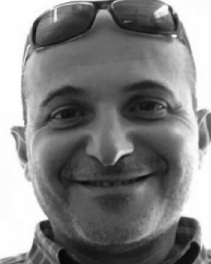

Prof. Reda Alhajj
Professor, ADSA Lab
Reda Alhajj (Senior Member, IEEE) is a tenured professor in the Department of Computer Science at the University of Calgary, Alberta, Canada. He is also affiliated with Medipol University, Istanbul, Turkey, and University of Southern Denmark, Odense, Denmark. He published over 500 papers in refereed international journals, conferences, and edited books. He served on the program committee of several international conferences. He is founding editor in chief of the Springer premier journal “Social Networks Analysis and Mining”, founding editor-in-chief of Springer Series “Lecture Notes on Social Networks”, founding editor-in-chief of Springer journal “Network Modeling Analysis in Health Informatics and Bioinformatics”, founding co-editor-in-chief of Springer “Encyclopedia on Social Networks Analysis and Mining” (ranked top 3rd in most downloaded sources in computer science in 2018), founding steering chair of the flagship conference “IEEE/ACM International Conference on Advances in Social Network Analysis and Mining”, and three accompanying symposiums FAB (for big data analysis), FOSINT-SI (for homeland security and intelligence services) and HI-BI-BI (for health informatics and bioinformatics). He is member of the editorial board of the Journal of Information Assurance and Security, Journal of Data Mining and Bioinformatics, Journal of Data Mining, Modeling and Management; he has been guest editor of a number of special issues and edited a number of conference proceedings. Dr. Alhajj's primary work and research interests focus on various aspects of data science and big data with emphasis on areas like: (1) scalable techniques and structures for data management and mining, (2) social network analysis with applications in computational biology and bioinformatics, homeland security, disaster management, etc., (3) sequence analysis with emphasis on domains like financial, weather, traffic, energy, etc., (4) XML, schema integration and re-engineering. He currently leads a large research group of PhD and MSc candidates. He received best graduate supervision award and community service award at the University of Calgary. He recently mentored a number of successful teams, including SANO who ranked first in the Microsoft Imagine Cup Competition in Canada and received KFC Innovation Award in the World Finals held in Russia, TRAK who ranked in the top 15 teams in the open data analysis competition in Canada, Go2There who ranked first in the Imagine Camp competition organized by Microsoft Canada, Funiverse who ranked first in Microsoft Imagine Cup Competition in Canada.